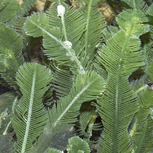
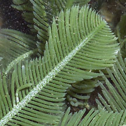
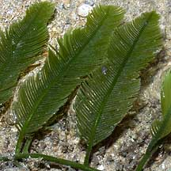
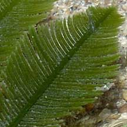
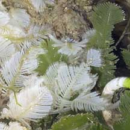
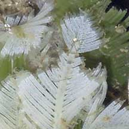
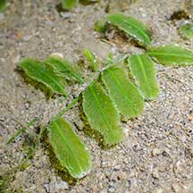
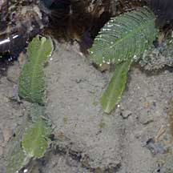
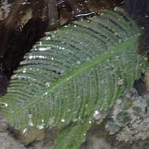

|
|
| green seaweeds text index | photo index |
| Seaweeds > Division Chlorophyta > Family Caulerpaceae > genus Caulerpa |
| Delicate
feathery green seaweed Caulerpa sertularioides Family Caulerpaceae updated Sep 2019 Where seen? This elegant feathery green seaweed is sometimes seen on our shores, growing on sand, coral rubble and among seagrasses. Usually found in clumps, which can cover an area of about 40-50cm. But it does not blanket the shore like other seasonally abundant seaweeds. Features: A feathery structure 5-7cm long. The central 'stem' of the feathery structure is cylindrical. The side 'branches' are long and cylindrical (not flattened) with pointed tips. Sometimes, the feathery structure has a 'waist' near the tip.These feathery structures emerge along the length of a horizontal 'stem' that creeps over hard surfaces or just under the sand. Bright green to olive green. Sometimes confused with other feathery green seaweeds or with seagrasses. Here's more on how to tell apart different feathery green seaweeds and how to tell apart feathery green seaweeds and seagrasses. Role in the habitat: The seaweed is said to be eaten by some species of sea hares. Human uses: This seaweed is reported to be edible, to have antibacterial, antifungal and antitumor properties, and to be used to treat high blood pressure and goiter. However, some Caulerpa species produce toxins to protect themselves from browsing fish. This also makes them toxic to humans. |
|
 Pulau Sekudu, Jun 05  Cylindrical 'branches' on a narrow central 'stem'. |
 Pulau Sekudu, Jun 04  |
 Sentosa, Apr 07  Turns transparent after releasing spores? |
| Delicate feathery green seaweeds on Singapore shores |
On wildsingapore
flickr
|
| Other sightings on Singapore shores |
 Pulau Hantu, Apr 21 Photo shared by Vincent Choo on facebook. |
 Terumbu Berkas, Jan 10 |
 |
Links
|